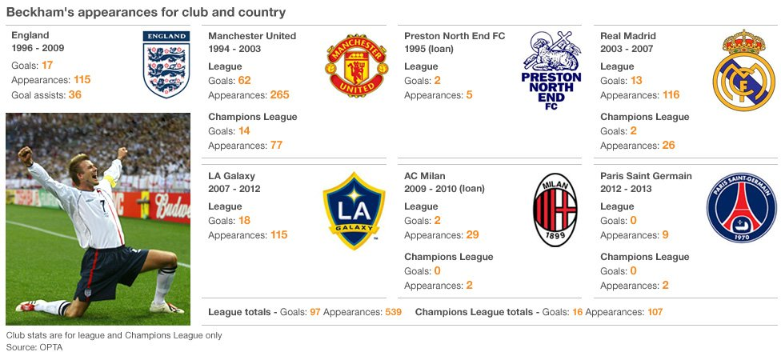
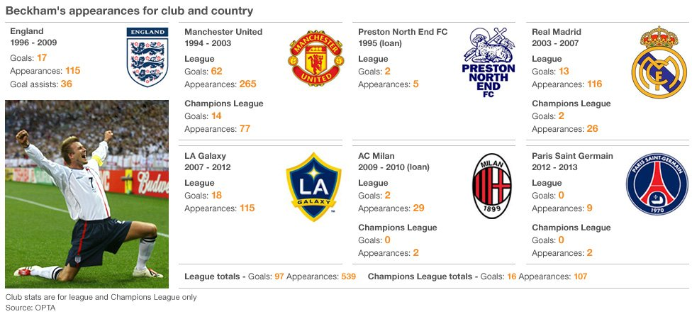

Bend It Like Beckham refers to this English gentleman's ability to put an
insane spin on penalty kicks that could fool the best goalies. A former Manchester
United and English national team player, he spent his last years playing for
the L.A. Galaxy. Also, he's married to Posh Spice, which makes him extra cool.
Captain of the Portugal national team, forward for Spanish club Real Madrid,
and currently ranked the number one soccer player in the world.

Played for the U.S. national team for seventeen years, winning two World Cups
and two Olympic gold medals. Is married to former Red Sox shortstop Nomar
Garciaparra. (Better known as NOMAH! in Boston circles.)
U.S. professional soccer player and former member of the national team best
known for ripping off her shirt in sheer joy after her game-winning penalty
kick in the 1999 World Cup
U.S. women's national soccer team goalkeeper and two-time Olympic goal
medalist, she holds the U.S. record for most consecutive shutout minutes.
The Michael Jordan of soccer. This Brazilian legend is widely considered the
best player in the history of the sport.


U.S. men's national team goalkeeper who gained the respect of the world for
smashing away a deluge of shots on goal during the 2014 World Cup. His saves
were so epic that he quickly became an Internet meme. #ThingsTimHowardCouldSave

At the age of twenty-four, he became the all-time top scorer for Barcelona
and won awards for the being the best player in the world from 2009 to 2012.